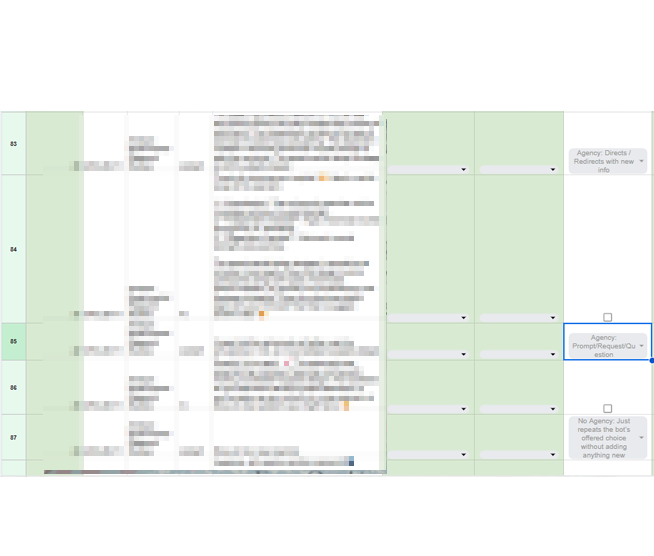

As part of the StudyCrafter and StudyHelper projects at NYU, I was deeply involved in the qualitative analysis of student-AI interactions. My primary responsibility centered on the development and application of a rigorous codebook to analyze students' engagement with an AI chatbot in the context of socially shared regulation (SSRL).
I played a key role in refining the definitions for codes like Agency: Directs/Redirects, Agency: Prompts/Questions, and No Agency. This required nuanced interpretation of student language, deep familiarity with SSRL theory, and collaborative calibration sessions to ensure inter-rater reliability across the research team. Through this process, I demonstrated my ability to align theoretical constructs with practical coding decisions.
The coding interface demanded high cognitive load—switching between transcription content, dropdown annotation, and multiple interpretation layers. I consistently identified ambiguous cases, provided rationale for edge cases, and contributed to revising the rubric for greater clarity and consistency. My attention to detail helped uncover subtle patterns in how students exercised (or failed to exercise) agency in their interactions with AI.
This project sharpened my skills in collaborative qualitative research, applied theory integration, and interaction analysis. It also reaffirmed my interest in how conversational interfaces can support or hinder learner agency—an insight I plan to build upon in future studies.